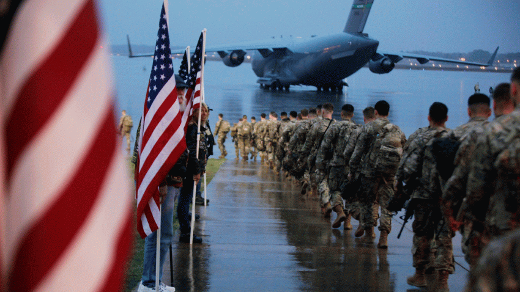
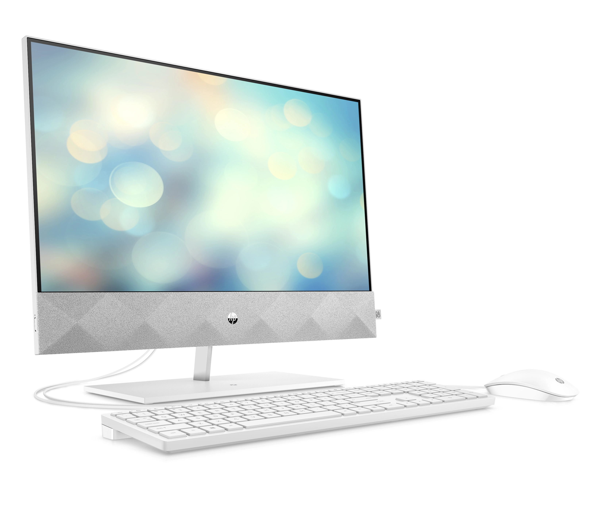

Computer communication was used a tool of war, the US coalition used the internet in the war against Saddam Hussein, the internet allowed them to know where everything was better than the enemy.
The internet was the one of the greatest inventions to date, it was better then the automobile, the printing press, telephones and more. It was one of the forms of communications of that time.
More emails are sent then first-class letters delivered then US post office, and in financial importance the internet create 3.1 billion dollars in business.
A new idea was going through early 1969 there was the thing called timesharing. Timesharing allowed a day long response into 2 seconds. Bob Taylor moved from computer to computer and tried to build a terminal. He wanted to build a way to connect all computers to one.

1993 – World Wide Web, invented in 1989 by Tim Burners league. Average people did not know they needed until they start using it.
Mark Andreesen was one of the first people to think of a way to release the web so everyone can use it. They added pictures audios and more for people to use.
Fall of 1993 they made mosaic for humanity. They posted an announcement into a news script, and it went from 10,10000,100000, etc.
James H. Clark was a poor boy who turned himself around to becoming an extraordinarily rich owner of silicon graphics.
Clark was trying to get something big and when he says Music, he knew that was it. He bet 1/3 of his net worth on it.
Microsoft for 2 decades was all about the computer industry, letting them have a firm grip of all things related to computers.

The internet is also a valuable place to get uncensored information through news, phones, and more. It was really a key in Kosovo crisis, that provided unfiltered information regarding the Balkan tragedy.
The technology for the standalone computers was possible for a long time but the frightening technological superiority in the soviets scared the United States. When the Russians launched sputnik president Eisenhower created ARPA.
On September 1, 1969 the first piece of hardware of the IMP was shipped to UCL and by the end of 1969 all the sites were connected, if this failed, they probably would have scrapped it.
Local area networks started popping up, the Internet start becoming a day to day use and a mandatory thing.